Tải ConsoleTranslator-PC-1.1.0-Setup.exe ở nút phía trên.
Mở file và bấm qua các bước cài. Nếu Windows hiện “Windows đã bảo vệ PC của bạn”, bấm Thông tin thêm → Vẫn chạy.
Mở app Console Translator từ menu Start và nhập mã dùng thử hoặc mã bản quyền.
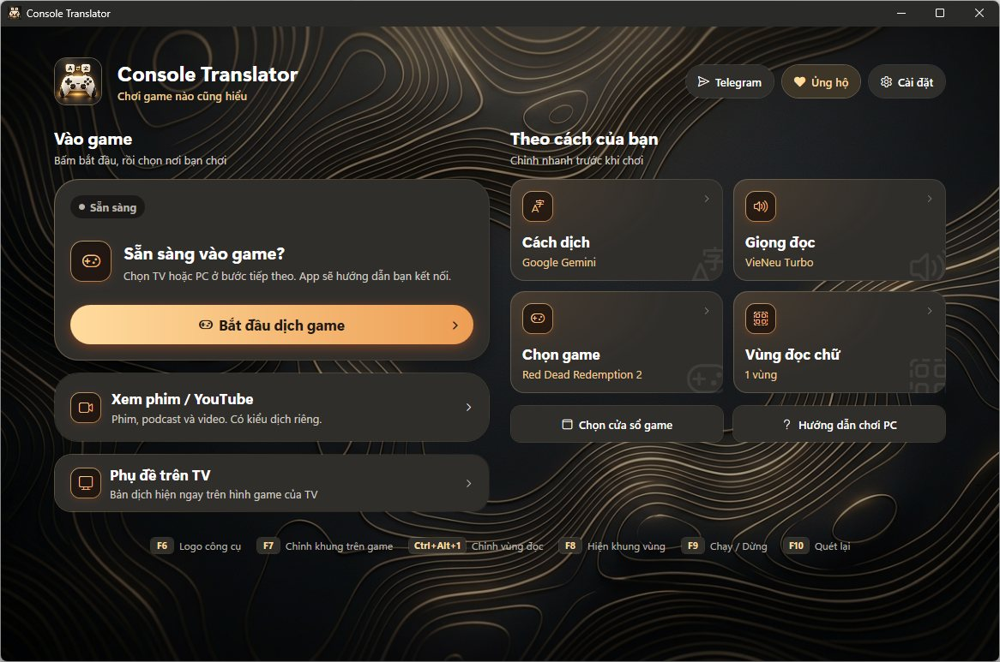
Màn hình chính. Bên trái để vào game, bên phải để chỉnh nhanh cách dịch, giọng đọc, game và vùng đọc chữ.
Đã có bản cũ thì cài đè lên, không cần gỡ. Từ 1.0.8 trở đi app tự báo khi có bản mới.
2. Thêm khóa AIKhông bắt buộc, nhưng dịch hay hơn rất nhiều.
Không có khóa thì app dịch bằng Bing, câu hay cứng và sai tên. Khóa Google Gemini miễn phí, lấy trong khoảng 2 phút.
Vào Cài đặt → Cách dịch, chọn Google Gemini.
Bấm Lấy khóa miễn phí, đăng nhập Google, tạo khóa rồi dán vào ô Khóa Google Gemini.
Có nhiều khóa (Gemini, Groq) thì chọn AI thông minh: hết lượt khóa này app tự chuyển sang khóa khác.
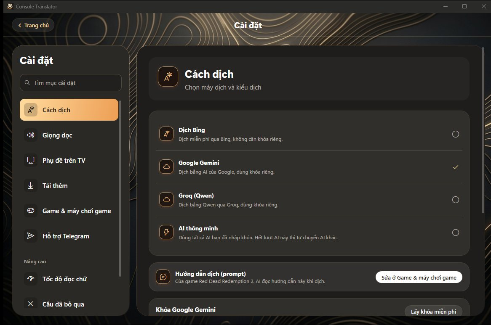
Cài đặt → Cách dịch.
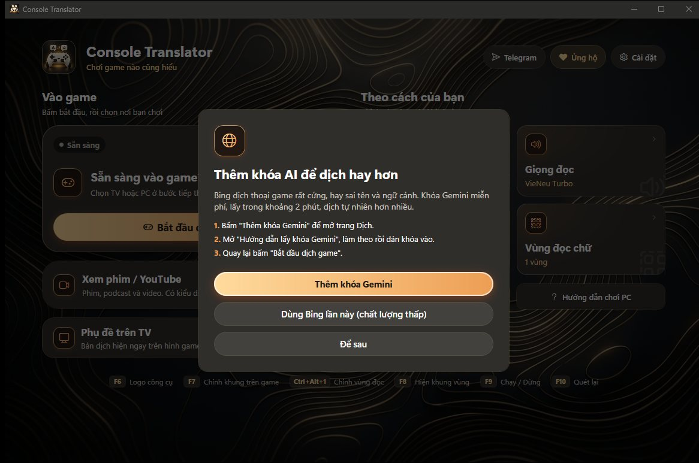
Chưa có khóa thì app nhắc khi bắt đầu dịch. Có thể bấm “Dùng Bing lần này”.
3. Chọn nơi chơiBấm “Bắt đầu dịch game” ở màn hình chính.
Chơi trên TV: PC kết nối máy PS qua Remote Play để đọc hình. Bạn vẫn chơi trên TV như bình thường.
Chơi trên TV, dùng capture card: máy PS cắm HDMI qua capture card vào PC. Mới có từ 1.1.0.
Chơi trên PC: chơi bằng chiaki-ng hoặc PXPlay trên PC, app đọc cửa sổ đó.
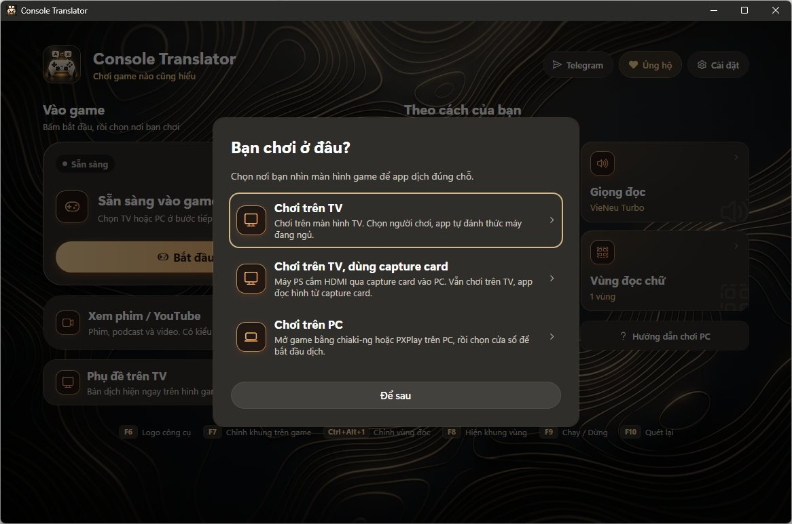
Chọn nơi chơi. Sau đó app hỏi game bạn chơi để dịch đúng tên nhân vật.
4. Chơi trên TV (Remote Play)Hỗ trợ PX5 và PX4. PC và máy chơi game phải cùng mạng.
Ghép nối lần đầu
Bật máy chơi game. Trong app bấm Tìm máy và chọn loại máy PX5 hoặc PX4.
Không thấy máy thì bấm Nhập địa chỉ bằng tay và gõ IP của máy (xem trong Cài đặt mạng của máy).
Mã người chơi: bấm nút tra mã, đăng nhập tài khoản PlayStation, chép mã vào app.
Mã trên máy: trên máy chơi game vào Cài đặt → Hệ thống → Chơi từ xa → Liên kết thiết bị, nhập 8 số đang hiện vào app.
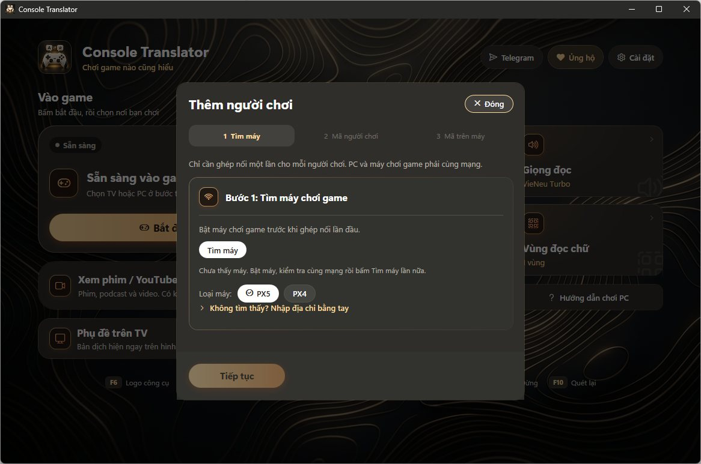
Ba bước ghép nối. Mỗi người chơi chỉ cần làm một lần.
Máy đổi địa chỉ mạng (do router cấp lại IP) thì từ 1.1.0 app tự tìm lại, không cần ghép nối lại.
Khi chơi
App tự đánh thức máy đang ngủ, kết nối rồi mở màn hình dịch. Thanh dưới cùng có: Chỉnh vùng dịch, đổi AI, Dịch menu, Kết nối TV, Đọc to và Nhân vật.
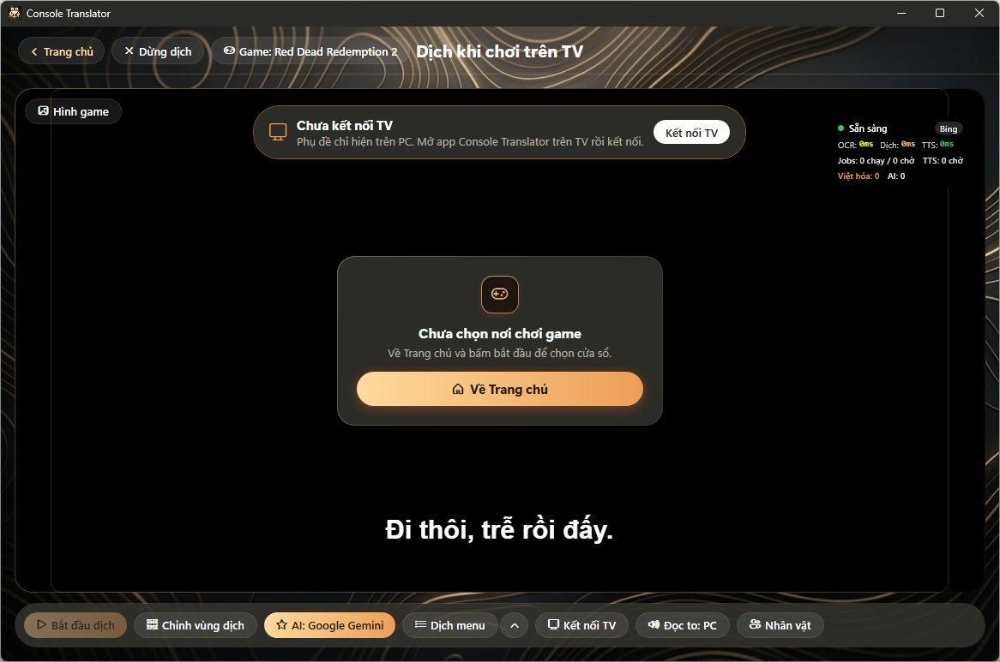
Màn hình dịch. Câu dịch hiện ở dưới, giống trên TV.
Dịch menu: dịch chữ trong menu, nhiệm vụ, hướng dẫn. Bật Tự ẩn khi gặp nút để bản dịch tự tắt khi menu có gợi ý nút bấm.
Dừng dịch ở góc trên. Khi thoát, app hỏi có cho máy ngủ không.
5. Chơi trên TV bằng capture cardMới trong 1.1.0. Không cần Remote Play, hình nét và không trễ.
Cắm: máy PS → HDMI vào capture card → HDMI ra TV. Cắm USB của capture card vào PC.
Đóng các app khác đang dùng capture card (OBS, Camera).
Bấm Bắt đầu dịch game → Chơi trên TV, dùng capture card. PC có nhiều thiết bị hình (webcam…) thì app hỏi chọn cái nào.
Nếu app báo chưa có quyền, mở Cài đặt Windows → Quyền riêng tư → Camera và bật “Cho phép ứng dụng máy tính truy cập camera”.
6. Chơi trên PCDùng chiaki-ng (miễn phí) hoặc PXPlay.
Mở chiaki-ng hoặc PXPlay và vào game.
Trong app bấm Chọn cửa sổ game và chọn cửa sổ đó.
Bấm Bắt đầu dịch game. Phụ đề hiện đè lên cửa sổ game.
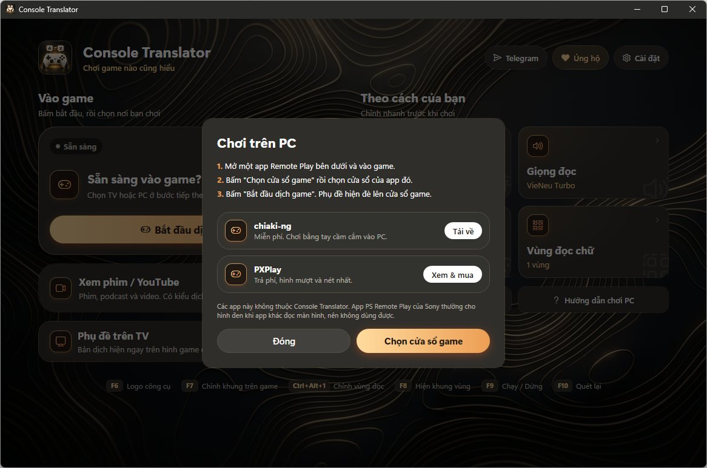
Có nút tải chiaki-ng và PXPlay. App PS Remote Play của Sony cho hình đen nên không dùng được.
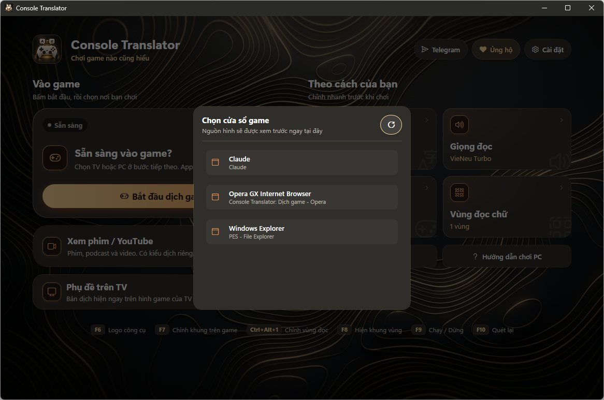
Chọn cửa sổ game. Bấm nút làm mới nếu chưa thấy cửa sổ.
7. Vùng đọc chữChỉ cho app chỗ phụ đề nằm.
Ở màn hình chính bấm Vùng đọc chữ, hoặc nhấn Ctrl+Alt+1.
Kéo khung xanh Phụ đề chính ôm vừa chỗ phụ đề game. Khung càng sát thì đọc càng nhanh và đúng.
Cần đọc thêm chỗ khác (bảng tin, thư…) thì bấm Thêm vùng dịch.
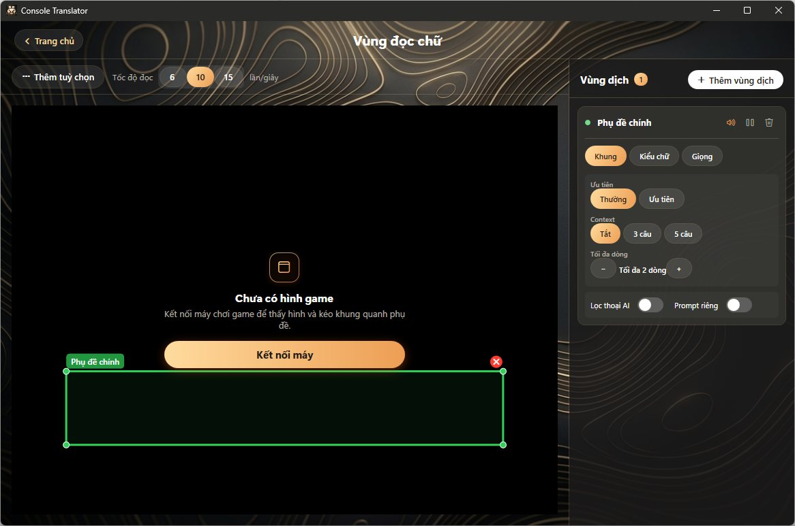
Mỗi vùng chỉnh được khung, kiểu chữ và giọng riêng. Tốc độ đọc 10 lần/giây là vừa.
8. Phụ đề trên TVCâu dịch hiện thẳng trên TV đang chơi.
Vào Cài đặt → Phụ đề trên TV, chọn loại TV: Android TV, LG (webOS) hoặc Samsung (Tizen).
Làm theo các bước để cài app Console Translator lên TV.
Mở app trên TV, rồi bấm Kết nối TV trong màn hình dịch. Từ 1.1.0 không cần nhập mã: chỉ bấm Đồng ý trên TV.
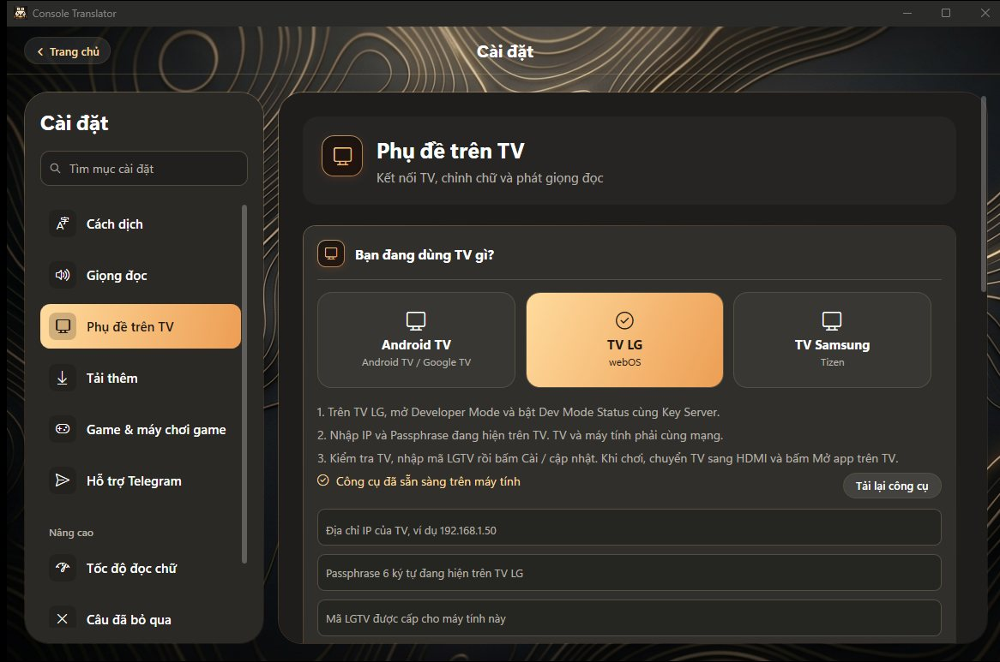
Cài đặt → Phụ đề trên TV.
Đè lên câu gốc trên TV: câu dịch che đúng chỗ phụ đề tiếng Anh của game.
Tên nhân vật có màu riêng cho từng người.
TV LG: bật Giữ app trên TV không tự tắt để app không bị webOS đóng giữa chừng.
Chế độ stream (OBS): thêm phụ đề vào OBS khi phát trực tiếp.
9. Giọng đọcĐọc to câu dịch bằng giọng Việt.
Vào Cài đặt → Giọng đọc, chọn bộ đọc. VieNeu Turbo hay nhất. Máy yếu thì chọn VieNeu Nano hoặc Giọng Windows.
Bấm tải bộ giọng lần đầu (chỉ tải một lần).
Chọn tốc độ đọc. Thoại game nhanh thì để 175% trở lên.
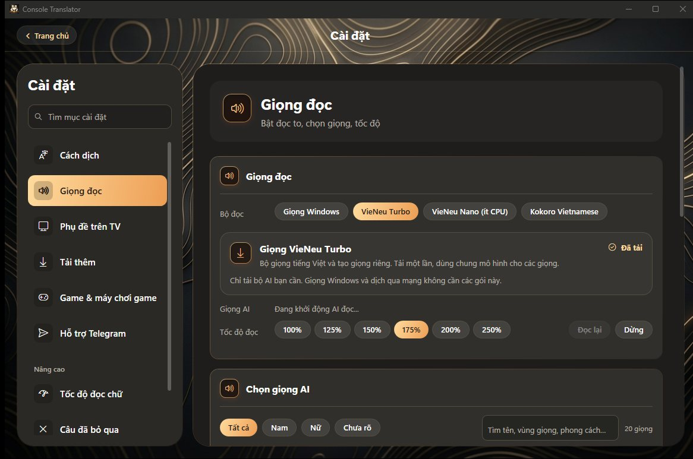
Có 20 giọng AI, lọc theo nam, nữ. Nút “Nhân vật” trong màn hình dịch gán giọng riêng cho từng nhân vật.
10. Chọn gameApp dịch đúng tên, cách xưng hô theo từng game.
Vào Cài đặt → Game & máy chơi game và bấm game bạn chơi. Không có thì bấm Thêm game.
Tự nhận ra game đang chơi: đăng nhập PlayStation để app biết bạn đang chơi gì và gợi ý đổi game. Không đăng nhập thì app đoán theo tên nhân vật trong phụ đề.
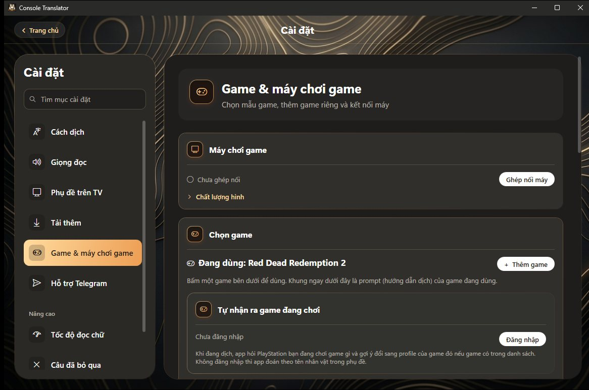
Game & máy chơi game.
11. Xem phim / YouTubeDịch phụ đề video trên PC.
Mở video trong trình duyệt hoặc app xem phim và bật phụ đề.
Ở màn hình chính bấm Xem phim / YouTube, chọn kiểu nội dung và ngôn ngữ phụ đề.
Bấm Chọn cửa sổ và bắt đầu.
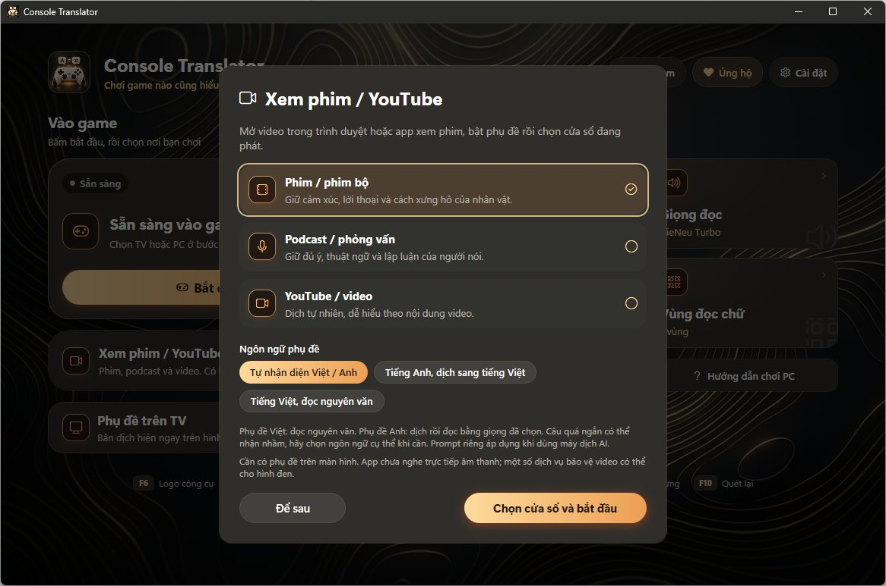
Phụ đề Việt thì đọc nguyên văn, phụ đề Anh thì dịch rồi đọc.
Phím tắt
F6 Hiện logo công cụ
F7 Chỉnh khung trên game
Ctrl+Alt+1 Chỉnh vùng đọc
F8 Hiện khung vùng
F9 Chạy / Dừng
F10 Quét lại
Cập nhật
App tự kiểm tra bản mới và báo khi có. Bấm cài là xong, không cần tải lại từ web.